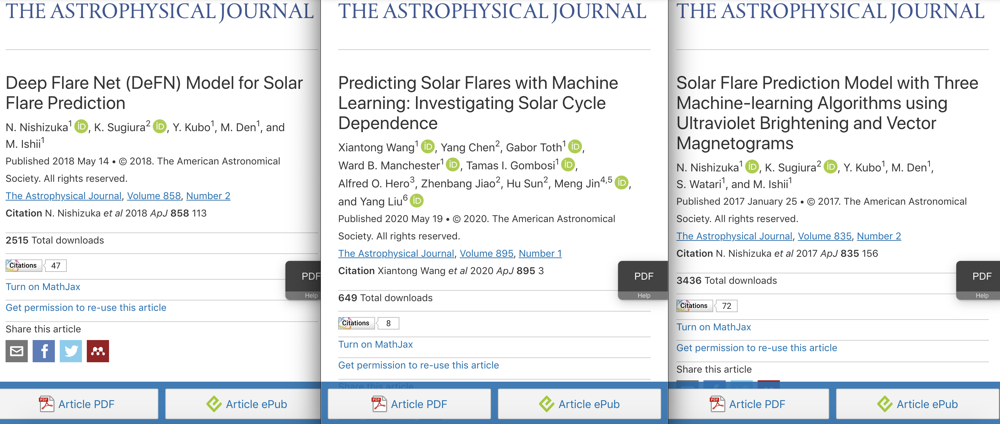
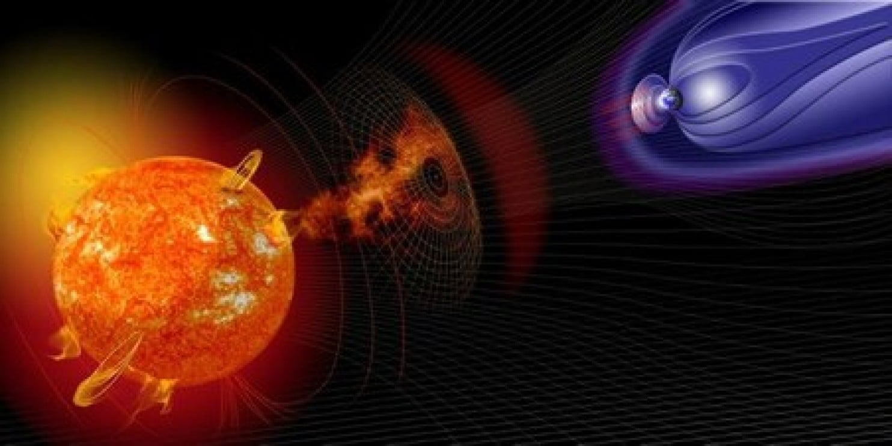
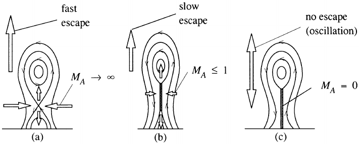
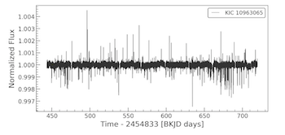

Procedural Summary
Step 1 (replication): Replicate Solar Flare Prediction from other studies and incorporate their best features together (Nishizuka et al. (2018); Wang et al. (2020); Nishizuka et al. (2017)).
Step 2 (preprocessing): Collect SDO Images 24 hours prior to a solar flare –> Each 24-hour set of Sun images correspond to intensity of solar flare –> CNN to feature extract Active Regions –> Run a sequence classification LSTM neural network –> Determine intensity and time of solar flare.
Step 3 (solar flare vs cme): Expand this classification into CMEs and be able to differentiate between the two.
Step 4 (theory): Potentially investigate whether or not CMEs and solar flares are dependent on each other and provide a scientific backbone for this.
Step 5 (distant stars): Expand into distant stars by using feature extraction on light curve data (extract the same features from SDO images and light curves).
